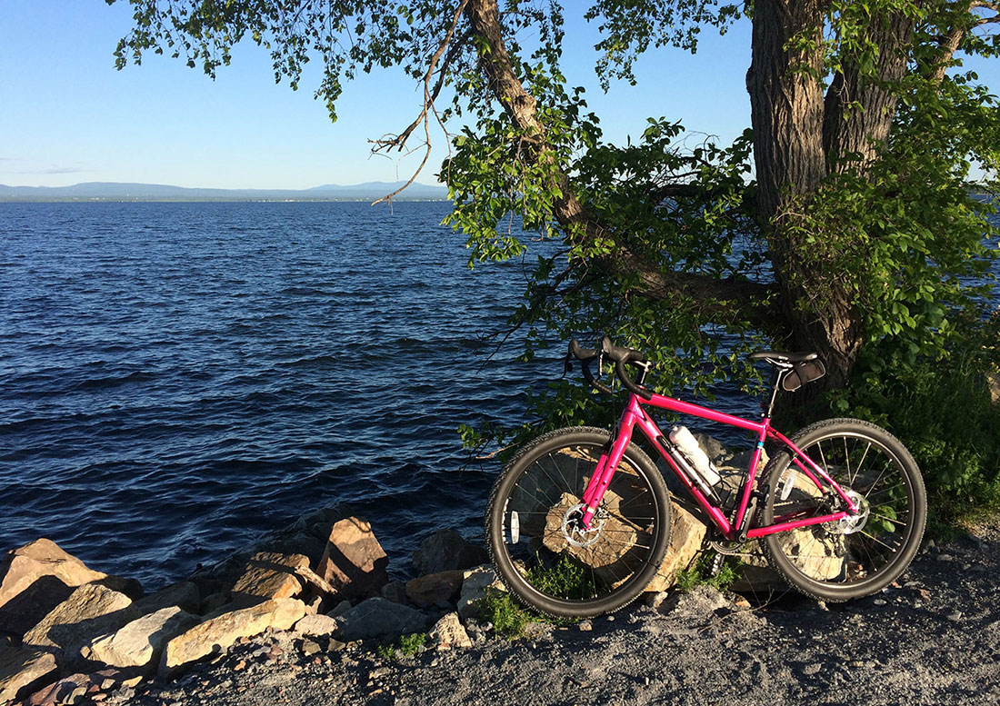
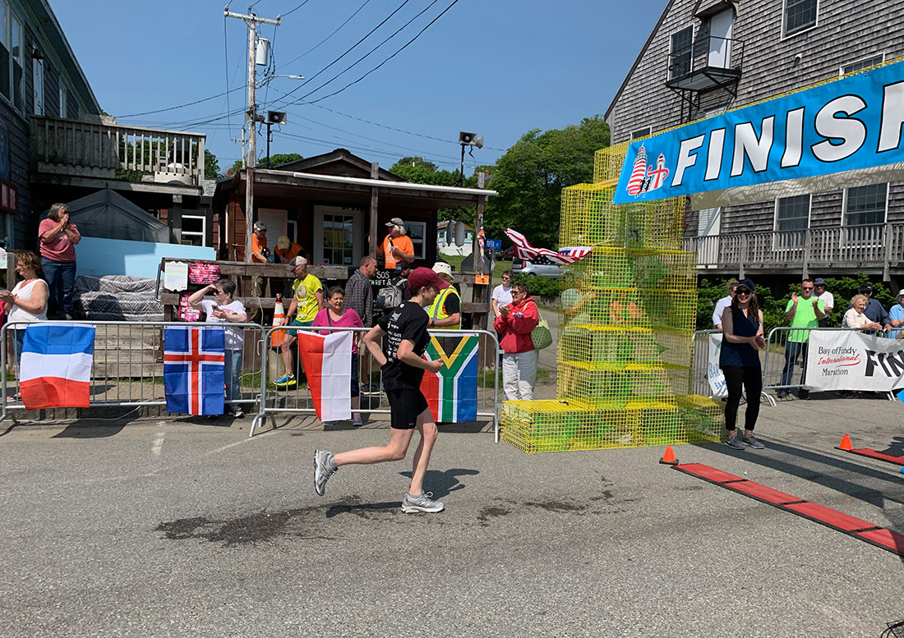
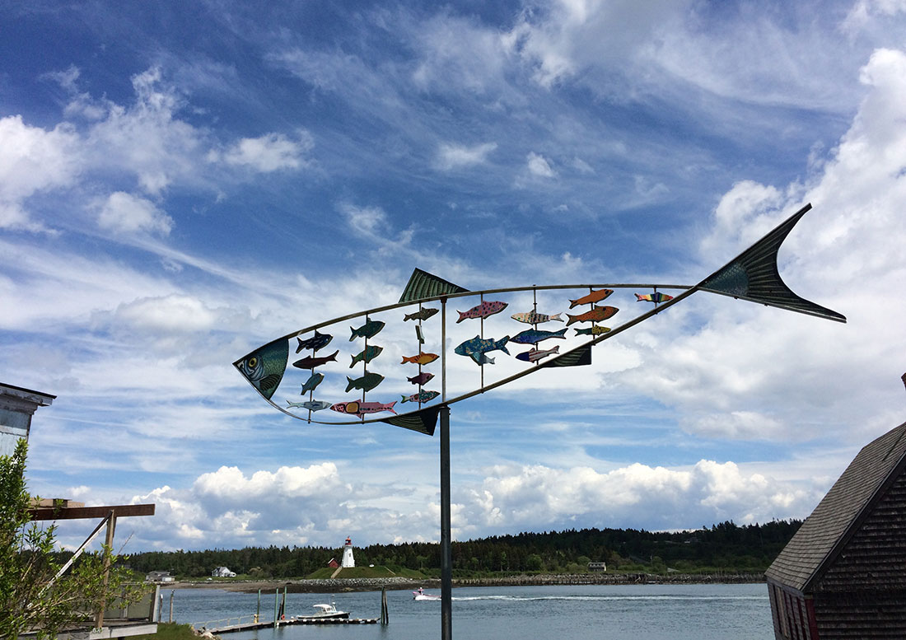

"My Interest Is Strong" ~ Shalamar
CYCLING
In the past I have done some long distance bike touring and lots of road bike riding. Currently I ride at a chiller pace and prefer a gravel bike to a skinny tire road bike.
RUNNING
I am a semi-retired distance runner. I can still bang out a 10k now and then.
PHOTO TAKING
I guess everyone is a photographer these days. I try to take interesting pictures.